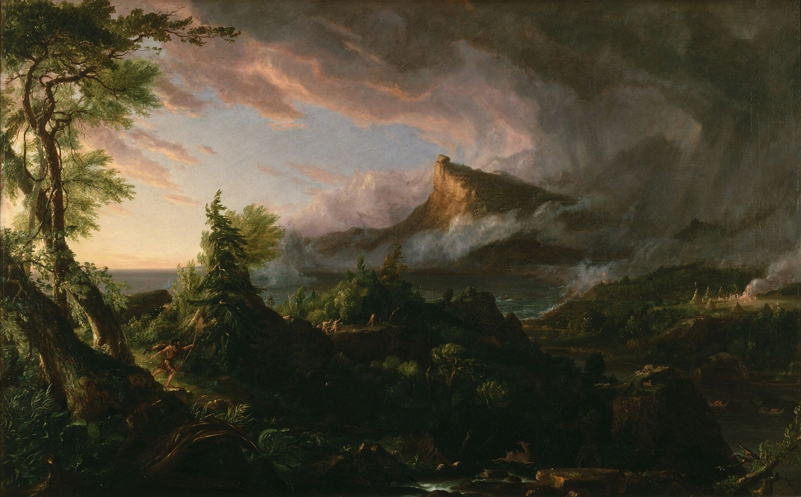
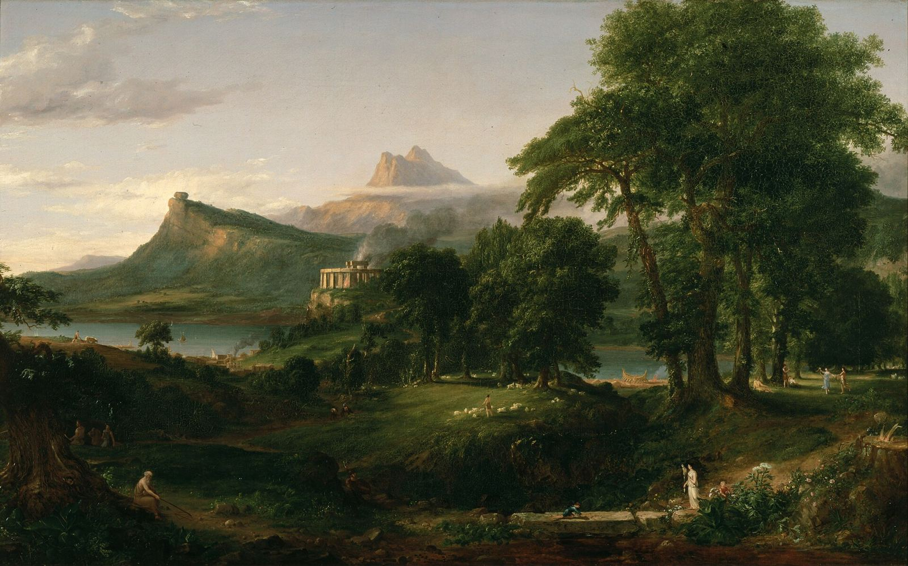
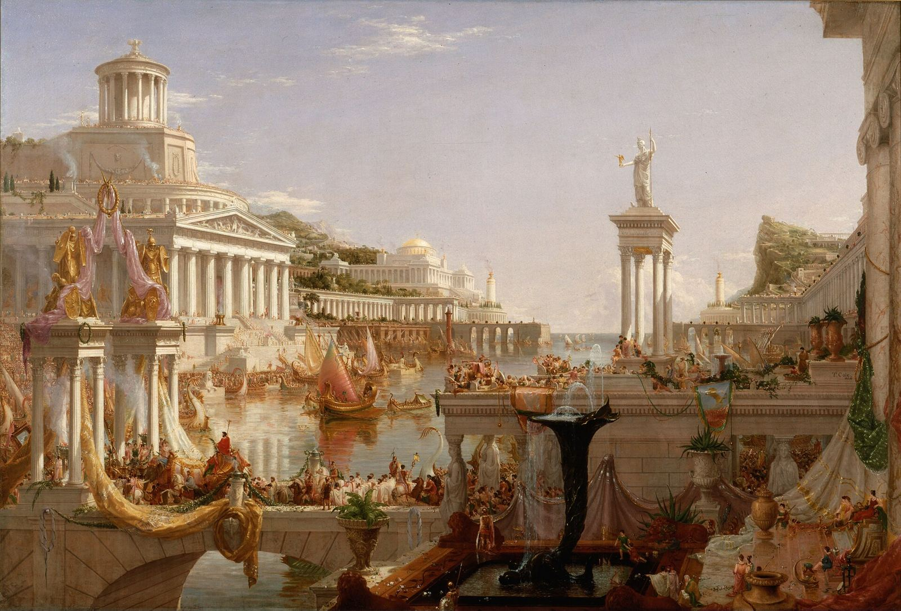

Calm systems for noisy problems.
Software engineer in Finland. I build data pipelines, AI systems with a real test set behind them and production software, then I do the growth work that gets them used.
StormTry to make sense of it and it stays a storm. Leave it alone and it finds its own order.
Most software is a handshake between people who don't share a language: a pharmacist and a database, a researcher and a funding portal, a restaurant and a phone screen. I work in the gap between them, and I measure whether it closed.
Work
-
aveksana.comLive product with institutional users. Visit the site.Visit
Aveksana
- Role
- Engineering, product and growth
- Stack
- Python, Selenium, OAuth2, ChromaDB, FastAPI, Brevo
Technical
- 4Funding sources in one index, including EU tenders and funding-portal calls. Built Artha's pipeline end to end.
- SearchBy meaning, not keywords: calls normalised into one schema, stored in ChromaDB and served through FastAPI.
Team
- BridgeBetween engineering, product and the people using it. A one-line brief, "we need an affiliate structure", became requirements, user journeys, design and a launch.
Growth
- 20kPeople reached organically on Facebook for a niche academic product.
- 0→1Affiliate and referral programme built from scratch, with onboarding email flows that opened above average.
-
PrivateRuns on a client's data, so the code stays closed. Scroll for the story.
BeaconMed
- Role
- Product owner, architect and operator
- Stack
- Node.js, Fastify, PostgreSQL 17 with row-level security, React, Expo and WatermelonDB, Docker, Caddy, Cloudflare, Tailscale, restic
Technical
- 85Pull requests reviewed and merged across the full lifecycle, from schema to hardened server.
- RLSTenants isolated in the database itself, so a bug in the API still can't leak one distributor's data to another.
- FEFOFirst-expiry-first-out stock, Section 23 tax invoices and DRAP rules built into the data model, plus an offline-first app for salesmen.
Team
- SoloProduct owner directing an AI coding agent. I write the requirements, design the system, review every change and run operations.
- 2Development partners, both distributors, testing it against their real workflows before launch.
Growth
- €10.50A month for the whole stack, staged on a hardened server ahead of launch.
-
PrivateClient work, so the code stays closed. Scroll for the story.
Oppipolku
- Role
- Team lead and product owner; engineering the core solution engine
- Stack
- Python scrapers, SQLite with provenance tables, entity resolution, FastAPI, OpenWebUI tool calling
Technical
- 9Pipeline stages from scattered public programme pages to a one-page launch assessment: demand, price band, break-even seats.
- 13Server-side tools behind the assistant, so every number it quotes is computed, never generated.
- 2Agents in production: university enrolment benchmarking across Finland and Istanbul, and audience segmentation for executive education.
- 100%Of figures traceable to a source URL and capture date. Ambiguous matches go to a person, not a guess.
Team
- 3Person team, led by me. I'm engineering the core solution engine and run product, delivery, design and sales.
Growth
- 1Design partner won after one discovery meeting: an executive-education unit in Istanbul that once cancelled a programme for low enrolment.
- FIFinnish version in testing with staff at TAMK, as an assistant for open-education questions.
-
 Open the site
Open the site
Dewon Fried Chicken
- Role
- Design, build and growth
- Stack
- HTML, CSS and JavaScript, Vercel, CSP and HSTS headers
Technical
- 7Pages, no build step and zero third-party requests, so it loads fast on a phone and passes strict security headers.
- 2Languages, Finnish and English, with every business detail in one config file.
Team
- 0Developer needed for updates. The owners change hours, prices and links themselves.
Growth
- 6Ways to order from one button: Wolt, Uber Eats, WhatsApp, takeaway, a table, or a group booking.
- 6Growth playbooks: competitors and menu, retail chains, influencers, partnerships, KPIs and a revenue operating system.
-
 Open the solution
Open the solution
Asten coach finder
- Role
- Solution design, closer to a feature hackathon than a design brief
- Built with
- Data model, ranking logic, a working HTML and JavaScript demo
Technical
- 5→500Coaches, one design. Filter on what makes a coach useless, rank everything else, and know what changes at each scale.
- 6Journey stages across 3 actors, with the data each stage needs to store.
Team
- MineA team workshop, my own solution. This design and page are my work.
Growth
- 8 wkSuccess measured as retention, athletes still training with their coach, not clicks.
- 18Questions for the company before writing code, ranked by what they unblock.
-
 Read the code
Read the code
Real Estate AI
- Role
- Solo, for the AI and machine learning course
- Stack
- Python, pandas, scikit-learn, XGBoost, Streamlit
Technical
- 0.885R² on held-out data with Random Forest, against 0.866 for XGBoost.
- 13%Lower mean error than XGBoost, with no tuning.
Growth
- 1Silent failure found and documented: an unseen neighbourhood gets priced as whichever one sorts first. It's the reason I care about evaluation.
-
 See it on GitHub
See it on GitHub
SDLC governance
- Role
- Author, for my own projects
- Built with
- Markdown and the Claude Code plugin format
Technical
- 13Gated phases, each deliverable with a check the agent must prove from the repository before ticking it off.
- 2Commands: /govern runs the current phase, /inspect audits completeness and the OWASP Top 10, read-only.
Growth
- 1Production project hardened with it: BeaconMed, where a fast, agreeable agent was the real risk.
-
cloudberry-scoutPython, open Finnish geodata and Sentinel-2. See it on GitHub.Open
Cloudberry Scout
- Role
- A side project, for fun
- Stack
- Python, GeoPandas, rasterio, Sentinel-2, LiDAR, NLS, GTK and FMI open data
Technical
- 8Signals fused into one score per bog: drainage, peat type, openness, moisture, wetness, hummocks, frost and lakes.
Growth
- 1Honest ceiling, stated first: only female plants fruit, so the score means better odds per bog walked, not a full bucket.
Now
Building Artha, at Aveksana
Researchers lose days hunting for funding across scattered portals. Artha puts the open calls that fit their work in front of them, in one search.
It takes data pipelines that run every day, search that understands what a project is about rather than its keywords, and product work that turns all of it into something researchers actually reach for.
Why does a correct answer so often fail to help?
An AI model can be right and still useless: too long, too vague, nothing you can act on. I keep wondering whether that comes from how these models are trained to sound helpful, and whether you can pull apart three things we usually blur together: being correct, being concrete, and moving someone's problem forward.
If you can measure that difference, you can find where it comes from. That's the question I'm chasing.
How I work



All of humanity's problems stem from man's inability to sit quietly in a room alone.
Blaise Pascal, Pensées
IBuild before claiming
If a skill isn't on a real project yet, I build a small one first. The CV comes after the commit.
IIMeasure the thing
A demo shows the best case. A hundred checked questions and a list of the ways it fails show where it breaks, and that's what people need before they trust it.
IIIName the constraint early
Data that can't leave a factory, a tax law about invoices, a Finnish level of A1. Cheaper to design around on day one than to discover in week six.
IVReview the machine
I work with coding agents every day. Their code gets the same reading, testing and gates a teammate's would, and the decisions stay mine.
Background
International Baccalaureate Diploma
The IB is built on the idea that a good thinker is first a whole person. Alongside six subjects, every student completes its core:
It taught me to stay curious across languages, cultures and disciplines. I still work that way: an engineer who also sells, designs, writes and listens.
Languages
English, proficient (C1)
Urdu and Pashto, native
Finnish, learning (A1)
Tools
Python, Java, SQL, JavaScript, React. Spring Boot, FastAPI, PostgreSQL, ChromaDB, Docker.
Software Engineering
Tampere University of Applied Sciences, Finland.
Led a student team through a task-manager MVP with Jira and Confluence.
Before software
Social media for a consultancy, and as a volunteer for The Blood Heroes, Pakistan's largest volunteer blood network.
Archive
The first things I built, from early courses. Small games, first web pages, services that taught me more by breaking than by working. The wind has had them for a while now.
- Small games for the browserJavaScript, HTML and CSS, made for fun
- Spring Boot services in JavaREST APIs over HTTP, dependency injection, Gradle, databases, deployed to Render
- First web pagesBefore I knew what a build step was
Got a noisy problem? Tell me about it.
Thanks for scrolling all the way down here.